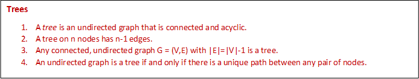
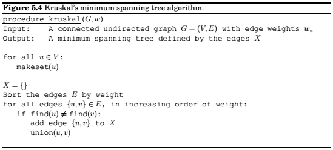
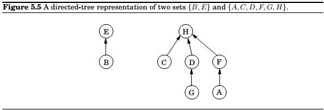
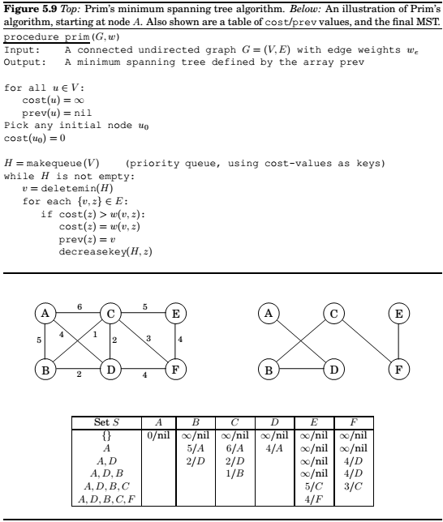
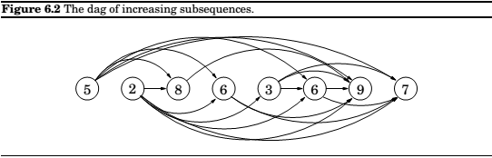
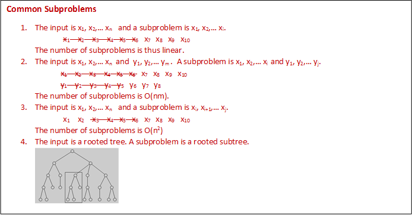
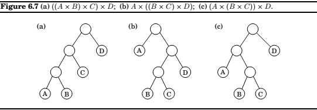
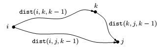

Chapter 5: Greedy Algorithms
!Thinking Ahead.
Minimum spanning trees
Property 1 Removing a cycle edge cannot disconnect a graph.
The tree with minimum total weight is then known as minimum spanning tree.
Formally,
Input : An undirected graph $G = (V, E)$; edge weights $w_e$.
Output : *A tree $T = (V, E')$, with $E' \subseteq E$, that minimizes $weight(T) = \sum_{e \in E'}w_e$.*
A greedy approach
Kruskal’s algorithm
Repeatedly add the next lightest edge that doesn’t produce a cycle.

The cut property
Cut Property Suppose edges $X$ are part of a minimum spanning tree of $G = (V, E)$. Pick any subset of nodes S for which $X$ does not cross between $S$ and $V-S$, and let $e$ be the lightest edge across this partition. Then $X \cup {e}$ is part of some $MST$.
Kruskal’s algorithm
We need to use a data structure for representing disjoint sets, supporting the following operations,
makeset(x): create a singelton set containing just x.
find(x) : to which set does x belong.
union(x,y) : merge the sets containing x and y.

A data structure for disjoint sets
Union by rank

$$\underline{procedure, makeset(x)}\
\pi(x) = x \
rank(x) = 0 \
, \
\underline{function, find(x)} \
while\quad x \neq \pi(x): x = \pi(x) \
return; x \
, \
\underline{procedure, union(x,y)} \
r_x = find(x) \
r_y = find(y) \
if\quad r_x = r_y:, return \
if\quad rank(r_x) > rank(r_y) : \
\quad \pi(r_y) = r_x \
else: \
\quad \pi(r_x) = r_y \
\quad if\quad rank(r_x) = rank(r_y): rank(r_y) = rank(r_y) + 1
$$
The given structure has the following properties. Property 1 For any $x, rank(x) < rank(\pi(x))$.
Property 2 Any root node of rank $k$ has at least $2^k$ nodes in its tree.
Property 3 If there are $n$ elements overall, there can be at most $n/2^k$ nodes of rank $k$.
Path compression
$$ \
\underline{function, find(x)} \
if\quad x \neq \pi(x): \pi(x) = find(\pi(x)) \
return; \pi(x) \
$$
During each find, when a series of parent pointers are followed up to the root, we will change all these pointers so that they point directly to the root.
This simple alteration results in doing slightly more work per find operation. However, the amortized cost of each operation turns out to be just barely more than $O(1)$.
Prim’s algorithm
In most general terms, any algorithm working on the following general schema is guaranteed to work.
$$X = {,}\text{ edges picked so far} \
repeat; until\quad |X| = |V|-1 :\
\quad \text{pick a set} S \subset V \text{ for which X has no edges between S and V - S} \
\quad let; e \in E \text{ be the minimum-weight edge between S and V - S} \
X = X \cup {e}
$$
Alternative to Kruskal’s algorithmfor finding Minimum Spanning Trees.

This is very similar to Dijkstra, only that the priorities are decided differently.
Huffman coding
Variable length encoding of symbols, depending on frequency of the particular symbol.
Should be prefix-free, i.e. no codeword can be a prefix of another codeword.
Any prefix-free encoding can be represented by a full binary tree.
The two symbols with the smallest frequencies must be the bottom of the optimal tree.
$$\underline{procedure; \text{Huffman}(f)} \
Input:\quad \text{An array $f[1…n]$ of frequencies} \
Output:\quad \text{An encoding tree with n leaves} \
, \
\text{let H be a priority queue of integers, ordered by } f \
for; i = 1, to, n:; insert(H, i) \
for; k=n+1, to, 2n-1: \
\quad i = deletemin(H), j = deletemin(H) \
\quad \text{create a node numbered k with children i,j} \
\quad f[k] = f[i] + f[j] \
\quad insert(H,k) \
$$
Horn formulas
Horn formulas are a framework for performing logical reasoning, expressing logical facts and deriving conclusions.
Knowledge about variables is represented by two kinds of clauses:
- Implications, whose left-hand side is an
ANDof any number of positive literals and whose right-hand side is a single positive literal. These express statements of the form “if the conditions on the left hold, then the one on the right must also be true.”. For instance, $(z\land w)\implies u$ might mean “if the colonel was asleep at 8 pm and the murder took place at 8 pm then the colonel is innocent.” A degenerate type of implication is the singleton “$\implies x$,” meaning simply that x istrue: “the murder definitely occurred in the kitchen”. - Pure negative clauses, consisting of an
ORof any number of negative literals, as in $(\bar u\lor \bar v \lor \bar y)$
Given a set of clauses, we need to assign true/false values to the variables that satisfies all the clauses. The is called a satisfying assignment.
So we have this given formula for finding a satisfying assignment.
$$ \
Input:\quad \text{a Horn formula} \
Output:\quad \text{a satisfying assignment, if one exists} \
, \
\text{set all variables to false} \
, \
\text{while there is an implication that is not satisfied:} \
\quad \text{set the right-hand variable of the implication to true} \
, \
\text{if all pure negative clauses are satisfied: return the assignment} \
\text{else: return “formula is not satisfiable”} \
$$
Set Cover
$$ \text{SET COVER} \
Input: \text{A set of elements $B$; sets } S_1,…S_m \subseteq B. \
Output: \text{A selection of the $S_i$ whose union is $B$} \
Cost: \text{Number of sets picked.} \
$$
The greedy algorithm will not be optimal, but it will be pretty close to it.
Claim , Supppose $B$ contains $n$ elements and that the optimal cover consists of $k$ sets. Then the greedy algorithm will use at most $k\ln n$ sets.
The ratio between the greedy algorithm’s solution and the optimal solution varies from input to input but is always less than $\ln n$. There are certain inputs for which the ratio is very close to $\ln n$.
We call this maximum ratio the approximation factor of the greedy algorithm.
Chapter 6: Dynamic Programming
The sledgehammers of the algorithms class: Dynamic Programming and Linear Programming
Shortest paths in dags, revisited
The following routine can be used to calculate the shortest path in DAG.
$$ \
\text{initialize all $dist(.)$ values to $\inf$} \
dist(s) = 0 \
\text{for each}\quad v \in V\setminus{s}, \text{in linearized order}: \
\quad dist(v) = min{(u,v)\in E}{dist(u) + l(u,v)}
$$
Dynamic programming is a very powerful algorithmic paradigm in which a problem is solved by identifying a collection of subproblems and tackling them one by one, smallest first, using the answers to subproblems to figure out larger ones, until the whole lot of them is solved. In dynamic programming we are not given a dag, it is implicit. Its nodes are the subproblems we define, and its edges are the dependencies between the subproblems.
Longest increasing subsequence

The problem can be represented as a DAG, containing all possible transitions; establish a node $i$ for each element $a_i$, and add directed edges $(i,j)$ whenever it is possible for $a_i$ and $a_j$ to be consecutive elements in an increasing subsequence, that is, whenever $i < j$ and $a_i < a_j$.
So, for finding the longest subsequence, our goal is simply to find the longest path in the dag.
$$\
for\quad j = 1, 2,… n: \
\quad L(j) = 1 + max{L(i): (i, j) \in E} \
return; max_jL(j) \
$$
, where $L(j)$ is the length of the longest path(the longest increasing subsequence) ending in $j$.
The actual subsequence of nodes can also be determined by some bookkeeping(ex. note down $prev(j)$),
the next-to-last node on the longest path to j.)
Edit distance
The minimum number of edits required to convert a string to another string.
A dynamic programming solution
$E(i,j)$ represents the subproblems of finding match between string $x[1…i]$ and $y[1…j]$. Our
final objective is to compute $E(m,n)$.
For that we need to express $E(i,j)$ in terms of smaller subproblems.
Now,
$E(i,j) = min{1 + E(i-1, j), 1 + E(i, j-1), diff(i,j) + E(i-1, j-1)}$
where, $diff(i,j)$ is 0 if $x[i] = y[i]$, and $1$ otherwise.
The above relation forms a table, which can easily be computed in time $O(mn)$.

Knapsack
A burglar wants to find out which items to carry, considering the weight and cost where he can carry up to a fixed amount of weight, maximizing the cost of items.
Knapsack with repetition
$K(w) =$ maximum value achievable with a knapsack of capacity $w$.
$K(w) = max_{i:w_i \leq w}{K(w - w_i)+v_i}$,
Algorithm:
$$\
K(0) = 0 \
for\quad w = 1 to; W : \
\quad K(w) = max{K(w-w_i) + v_i : w_i < w} \
return; K(W) \
$$
Knapsack without repetition
$K(w,j) =$ maximum value achievable using knapsack of capacity $w$ and items $1…j$.
$K(w,j) = max{K(w-w_j,j-1) + v_j, K(w, j-1)}$
$$\
\text{initialize all } K(0,j) = 0 \text{ and all } K(w,0) = 0 \
for\quad j=1; to; n: \
\quad for\quad w=1; to; W : \
\quad \quad if; w_j > w: K(w,j) = K(w,j-1) \
\quad \quad else: K(w,j) = max{K(w,j-1), K(w-w_j,j-1)+v_j} \
return; K(W,n) \
$$
Chain Matrix Multiplication
Matrix multiplication is not commutative, but is associative.
Which means, $A \times (B \times C) = (A \times B) \times C$.
Thus, we can compute product of four different matrices in many different ways, Some of the ways are much better(computationally) than others.

Shortest Paths
Shortest reliable paths
Suppose we want the shortest path from $s$ to $t$ that uses at most $k$ edges.
Is there a quick way to adapt Dijkstra’s algorithm to this new task? Not quite; since the algorithm focuses on the length of each shortest path without remembering the number of hops in the path, which is now a crucial information.
In dynamic programming, we can now define,
for each vertex $v$ and each integer $i < k, dist(v,i)$ to be the length of the shortest path from $s$ to $v$ that uses $i$ edges.
$dist(v,i) = min_(u,v)\in E{dist(u, i-1) + l(u,v)}$.
All pairs shortest paths
Floyd-Warshall algorithm :
We want to find the shortest paths between all pairs of vertices.
Is there a good subproblem for solving this problem. Yes.
We can start with just two starting nodes, and gradually expand the set of possible intermediate nodes.
More concretely, number the vertices in $V$ as ${1…n}$ and let, $dist(1,j,k)$ denote the length of
shortest path from $i$ to $j$ in which only nodes ${1,2…k}$ can be used as intermediates.
Initially, $dist(1,j,0)$ is the length of the direct edges between $i$ and $j$ if one exists, and is $\inf$ otherwise.

This, using $k$ gives us a shorter path from $i$ to $j$ if and only if
$dist(i,k,k-1) + dist(k,j,k-1) < dist(i,j,k-1)$,
in which case $dist(i,j,k)$ should be updated accordingly.
Here is the Floyd-Warshall algorithm – and it takes $O|V|^3$ time.
$$\
for \quad i=1 to n:\
\quad for \quad j=1 to n:\
\quad \quad dist(i,j,0) = \infty\
for;all \quad (i,j) \in E:\
\quad dist(i,j,0) = l(i,j)\
for\quad k=1;to;n:\
\quad for\quad i=1;to;n:\
\quad \quad for\quad j=1;to;n:\
\quad \quad \quad dist(i,j,k)=min{dist(i,k,k-1)+dist(k,j,k-1), dist(i,j,k-1)};to;n:\
$$
The travelling salesman problem
What sgould be the appropriate subproblem?
For a subset of cities $S \subseteq {1,2,….n}$ that includes $l$, and $j \in S$, let $C(S,j)$ be the length of the shortest path visiting each node in $S$ exactly once, starting at $l$ and ending at $j$.
When $|S| > 1$, we define $C(S,1) = \infty$ since the path cannot both start and end at $1$.
Now, let’s express $C(S,j)$ in terms of smaller subproblems. We need to start at $1$ and end at $j$; what should we pick as the second-to-last city? It has to be some $i \in S$, so the overall path length is the distance from $1$ to $i$, namely $C(S-{j}, i) + \text{the length of the final edge,}d_{ij}$. We must pick the best such $i$:
$$C(S,j) = min_{i\in S:i\neq j} C(S-{j}, i) + d_{ij}$$
The subproblems are ordered by $|S|$. here’s the code.
$$C({1}, 1) = 0\
for \quad s=2; to ; n:
\quad for; all; subsets; S \subseteq {1,2,…n}\text{ of size } s \text{ and containing } 1:\
\quad \quad C(s,j) = \infty\
\quad \quad for; all; j \in S,; j \neq 1:\
\quad \quad \quad C(S,j) = min{C(S-{j},i)+d_{ij}:i\in S,, i \neq j}\
return \quad min_jC({1,…n},j)+d_{j1}
$$
There are at most $2^m.n$ subproblems, and each one takes linear time to solve. The total running time is therefore $O(n^22^m).
Independent Sets in trees
We need to find the largest independent set from a tree.
Here is our algorithm,
Start by rooting the tree at any node $r$. Now, each node defines a subtree - the one hanging from it. This immediately suggests subproblems,
$ I(u) =$ size of largest independent set of subtree hanging from $u$.
Our final goal is $I(r)$.
So, $I(u)$ turns out to be,
$$I(u) = max \bigl{1 + \sum_{\text{grandchildren},w,\text{of},u}I(w), \sum_{\text{children},w,\text{of},u}I(w)\bigr}$$